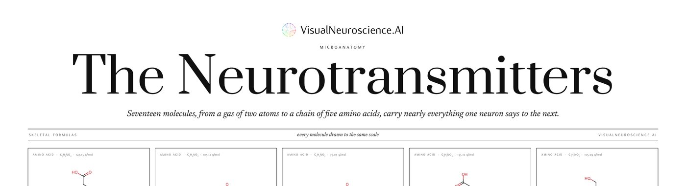

The Neurotransmitters
a poster · not on sale yet
Microanatomy · skeletal formulas
The Neurotransmitters
Seventeen molecules, from a gas of two atoms to a chain of five amino acids, every one drawn at the same bond length so their sizes compare, with what each does and the family it belongs to; beneath them, where they come from: the catecholamines from tyrosine, the indolamines from tryptophan, GABA from glutamate, acetylcholine made and unmade, nitric oxide from arginine.
Skeletal formulas drawn with RDKit from SMILES, with formulas and average molar masses computed for the forms drawn; the words are the Microanatomy page’s.
A1 · 594 × 841 mm · portrait · white matte paper
Not on sale yet
The shop that will print and post this poster is being set up. This page stands in for it for now, and the interest it gathers decides what is printed first.
Hear when it is on sale →